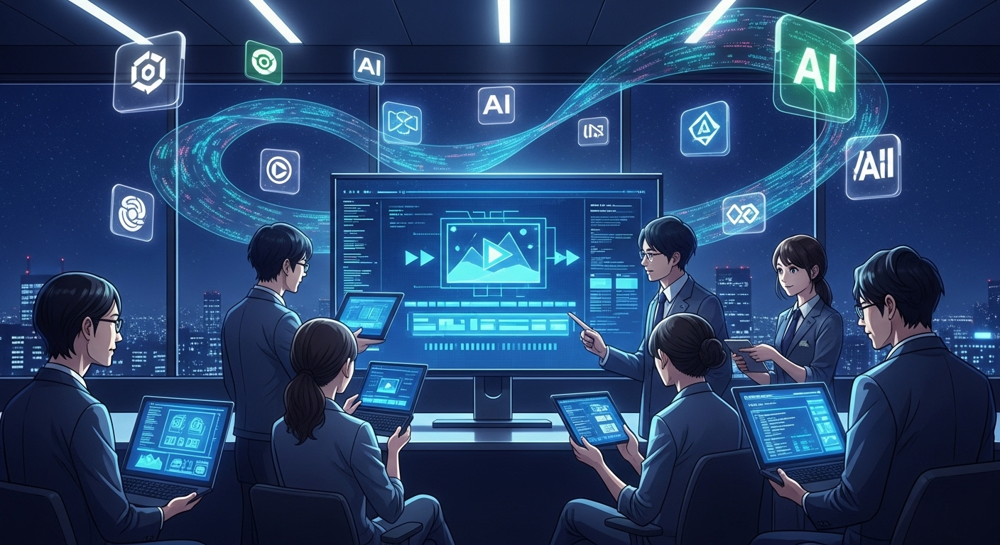
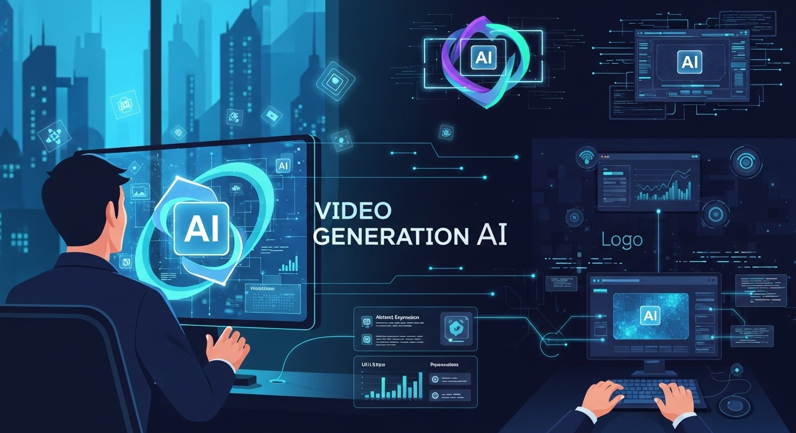

記事タイトル：画像から動画に生成AIを徹底解説！開発者のための活用術とおすすめツール

導入

デジタルコンテンツが飽和する現代において、情報を効果的に伝え、ユーザーの心をつかむ手段として「動画」の重要性は増すばかりです。しかし、高品質な動画コンテンツの制作には、専門的なスキル、時間、そして多大なコストがかかるのが現実でした。特に開発現場においては、サービスのデモ動画や機能説明、UI/UXのプロトタイプなど、視覚的な情報伝達が不可欠でありながら、その制作にリソースを割くことは容易ではありません。
そんな中、近年急速な進化を遂げているのが、AI（人工知能）を活用したコンテンツ生成技術です。中でも「画像から動画を生成するAI」は、静止画一枚から、まるで命が吹き込まれたかのような動きのあるコンテンツを創り出す画期的な技術として、大きな注目を集めています。この技術は、これまで動画制作の障壁となっていた多くの課題を解決し、開発者の皆様に新たな可能性をもたらすことでしょう。
本記事では、この画像から動画を生成するAIについて、その基本的な仕組みから、開発プロジェクトにおける具体的なメリット・デメリット、そして今すぐ活用できるおすすめツール、さらには未来の展望まで、多角的に徹底解説いたします。開発者の皆様が、この革新的な技術を日々の業務にどのように取り入れ、効率と創造性を飛躍的に向上させられるか、そのヒントをきっと見つけられるはずです。落ち着いたトーンで、しかししっかりと、そして優しく親しみやすい雰囲気で、皆様の理解を深めるお手伝いができれば幸いです。さあ、AIが拓く動画生成の新たな世界へ、一緒に足を踏み入れてみましょう。
1. 画像から動画を生成するAIとは？基本と注目背景
AI技術の進化は、私たちの想像をはるかに超えるスピードで、様々な分野に革新をもたらしています。その中でも、特にクリエイティブな領域において、目覚ましい発展を遂げているのが「生成AI」です。テキストから画像を生成するAIが大きな話題を呼んだのは記憶に新しいですが、その波は今、静止画から動きのある「動画」を生み出す領域へと広がっています。
このセクションでは、画像から動画を生成するAIがどのような技術に基づいているのか、なぜ今これほどまでに注目されているのか、そしてその基本的な流れと技術的進化について、優しく丁寧に解説していきます。
1-1. 画像生成AIと動画生成AIの仕組み
まず、画像から動画を生成するAIの基盤となる技術について理解を深めましょう。
画像生成AIの仕組み：静止画に息吹を吹き込む技術
画像生成AIの代表的な技術として、「GAN（敵対的生成ネットワーク）」や「Diffusion Model（拡散モデル）」が挙げられます。
- GAN（Generative Adversarial Network）: これは「生成器」と「識別器」という2つのAIモデルが互いに競い合いながら学習を進める仕組みです。生成器は本物そっくりの画像を生成しようと試み、識別器はその画像が本物か偽物かを判断しようとします。この競争を繰り返すことで、生成器は非常にリアルな画像を生成する能力を獲得します。
- Diffusion Model（拡散モデル）: 近年、特に高い品質の画像を生成することで注目されているのが拡散モデルです。このモデルは、ノイズだらけの画像から段階的にノイズを取り除き、最終的にクリアな画像を生成するというアプローチを取ります。まるで霧の中から像が浮かび上がるように、詳細で高品質な画像を生成できるのが特徴です。
これらの画像生成AIは、テキストの指示（プロンプト）や既存の画像を元に、全く新しい静止画を創り出すことができます。例えば、「夕焼けのビーチを散歩する犬」というテキストから、その情景にぴったりの画像を生成するといった具合です。
動画生成AIの仕組み：静止画に時間軸と動きを与える
では、動画生成AIはどのようにして静止画に動きを与えるのでしょうか。動画は、本質的には「時間軸に沿って連続する複数の静止画（フレーム）」で構成されています。動画生成AIは、この時間軸の概念を画像生成AIの技術に統合することで実現されます。
主なアプローチはいくつかありますが、中心となるのは以下の考え方です。
- フレーム間の動きの予測と生成: 最初の画像（フレーム）を基点として、次のフレームがどのように変化するかをAIが予測し、生成します。この際、単に画像を連続させるだけでなく、物体の動き、光の変化、カメラワークなどを考慮して、自然な動画となるように補間や生成を行います。
- 一貫性の維持: 動画全体を通して、登場人物や物体の形状、質感、色合いなどが一貫していることが重要です。AIは、各フレーム間でこれらの要素が矛盾しないように、長期的な時間軸での整合性を保ちながら画像を生成します。
- 潜在空間での操作: 多くの動画生成AIは、画像を直接操作するのではなく、その画像の「特徴」を抽象化した「潜在空間」と呼ばれる多次元の空間で処理を行います。この潜在空間で動きの方向や強度を操作し、それを再び画像へと変換することで、滑らかな動きのある動画を生み出します。
具体的には、Diffusion Modelを時間軸に拡張した「Video Diffusion Model」や、Transformerアーキテクチャを応用して時系列データを効率的に処理するモデルなどが開発されています。これらの技術により、一枚の画像から、その画像に写るオブジェクトが動いたり、カメラがズームしたりパンしたりするような、生命感あふれる動画が生成可能となっているのです。
1-2. なぜ今、画像からの動画生成AIが注目されるのか
画像から動画を生成するAIが、これほどまでに大きな注目を集めているのには、いくつかの明確な理由があります。
- 動画コンテンツ需要の爆発的増加:
- YouTube、TikTok、InstagramなどのSNSプラットフォームの普及により、動画コンテンツの消費量は年々増加の一途を辿っています。マーケティング、教育、エンターテイメント、情報伝達のあらゆる場面で、動画は最も効果的な手段の一つとなりました。
- しかし、その需要に応えるだけの動画制作リソースは限られており、常に高品質な動画を量産することが課題となっていました。AIは、この供給と需要のギャップを埋める可能性を秘めています。
- 技術の飛躍的な進歩と品質の向上:
- 数年前までは、AIが生成する動画は不自然な動きや画質の粗さが目立ち、実用レベルには遠いものでした。しかし、Diffusion Modelなどの新しい生成モデルの登場と、計算能力の向上、そして膨大な学習データの活用により、生成される動画の品質は劇的に向上しました。
- 特に、OpenAIのSoraやGoogleのLumiereなど、最新のモデルは、現実と見分けがつかないほどのリアルさや、複雑な物理法則を理解したかのような動きを生成できるレベルに達しつつあります。これにより、プロのクリエイターや開発者にとっても無視できないツールとなりつつあります。
- 時間とコストの大幅な削減:
- 従来の動画制作は、企画、撮影、編集、CG制作など、多岐にわたる工程と専門スキルが必要であり、莫大な時間とコストを要しました。AIを活用すれば、一枚の画像や簡単なテキストプロンプトから、数分で動画を生成できるため、これらの障壁を劇的に低減できます。
- 特に、開発プロジェクトにおけるデモ動画やプロトタイプ作成、マーケティングにおけるA/Bテスト用の動画量産など、スピードと効率が求められる場面でその真価を発揮します。
- クリエイティブの民主化と表現の拡大:
- 専門的な動画制作スキルがない個人や小規模チームでも、手軽に高品質な動画を作成できるようになります。これにより、これまで動画制作に踏み出せなかった人々が、自身のアイデアを動画として表現する機会を得られます。
- また、AIの予測不能な創造性は、人間の発想だけでは生まれなかったような、斬新でユニークな表現を生み出す可能性も秘めており、クリエイティブの幅を大きく広げることにも貢献します。
これらの要因が複合的に作用し、画像から動画を生成するAIは、単なる技術的な興味の対象を超え、ビジネス、クリエイティブ、そして私たちの日常生活に深く根差す革新的なツールとして、今、最も注目される技術の一つとなっているのです。
1-3. AI動画生成の基本的な流れと技術的進化
画像から動画を生成するAIの基本的な流れは、非常に直感的でシンプルです。しかし、その裏側では高度な技術が絶えず進化を続けています。
AI動画生成の基本的な流れ
一般的に、画像から動画を生成するAIツールの利用は、以下のステップで進められます。
- 入力の準備:
- 参照画像（Source Image）のアップロード: まず、動画の基となる静止画をアップロードします。これは、写真、イラスト、CGレンダリング画像、ワイヤーフレームなど、どのような画像でも構いません。この画像が動画の「出発点」となります。
- テキストプロンプトの入力（オプション）: 生成したい動画の動きや内容、スタイルなどをテキストで具体的に指示します。例えば、「画像内の人物が微笑む」「カメラが右にパンする」「水が流れるような動きを加える」といった具体的な指示です。プロンプトが詳細であるほど、AIはユーザーの意図に近い動画を生成しやすくなります。
- スタイルやエフェクトの選択（オプション）: ツールによっては、生成される動画のスタイル（アニメーション、実写風、油絵風など）や、特定の動き（ズームイン、回転、揺れなど）をプリセットから選択できる